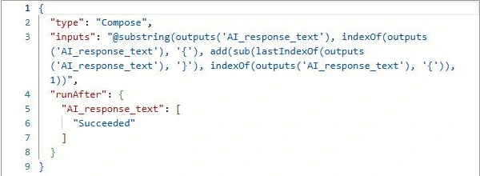
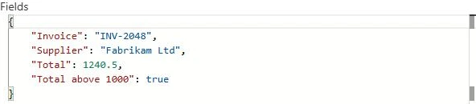

- Power Automate
- Level 9 · Integration and AI · 9 of 10
AI prompts in flows and cleaning their JSON
A prompt is an instruction you write once and run from a flow with Run a prompt: extract the invoice number, classify a request. Models sometimes wrap their JSON in chatty text, so the flow must clean it.
Ask for JSON, with exact keys
WhatA prompt that returns JSON, plus one expression that strips anything around it.
Why
json() fails the first time the model adds a friendly sentence.DemoInvoice fields from a chatty answer.
Extract the invoice number, supplier name, total and currency
from the email below.
Return only a JSON object with the keys invoiceNumber, supplier,
total (a number) and currency. No other text.
If a value is missing, use null.
Email:
[Email body]Messy answer in, clean fields out
Cleaning step by step
AI response text: Sure! Here is… ```json {…} ``` Let me know…
Only the JSON: from the first
{ to the last }As object:
json(…)Fields: INV-2048Fabrikam Ltd1240.5
Sure! Here is the extracted data:
```json
{
"invoiceNumber": "INV-2048",
"supplier": "Fabrikam Ltd",
"total": 1240.50,
"currency": "EUR"
}
```
Let me know if you need anything else.
substring(outputs('AI_response_text'), indexOf(outputs('AI_response_text'), '{'), add(sub(lastIndexOf(outputs('AI_response_text'), '}'), indexOf(outputs('AI_response_text'), '{')), 1))| Piece | What it does |
|---|---|
indexOf(text, '{') | Where the JSON starts. |
lastIndexOf(text, '}') | Where it ends. |
sub(end, start) + 1 | Its length. |
substring(...) | The JSON alone. |

greater(float(outputs('As_object')?['total']), 1000)| Piece | What it does |
|---|---|
float(...) | The total may come back as text. |
greater(..., 1000) | True: needs extra approval. |
Before you trust it
Safe parsing
Parse inside a Scope
Parsed, required keys present, values sensible?
Yes
Use the values
No
Route to a person; keep the raw output in the log
Don't send confidential data to a prompt unless your organisation has approved it.
New to this? Start from the basics optional
Prompt: instructions for a generative AI model, with input placeholders.
Common mistakes
- Parsing the raw answer directly.
- Vague key names.
- Comparing numbers that arrived as text.